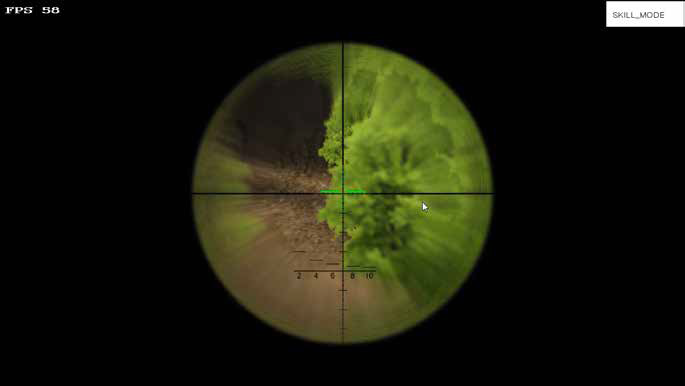
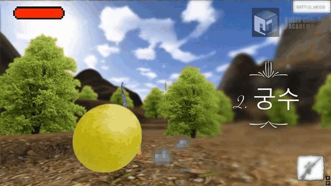
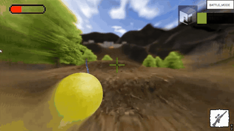

PARTICLE SYSTEM / CUSTOM TOOL
VIDEO파티클 제작 도구
영상 불러오는 중
CLIENT PROGRAMMER / PORTFOLIO
게임 클라이언트 환경에서 구현한 렌더링·파티클 시스템과 수학 기반의 시각 효과를 기술별로 정리했습니다.
영상은 음소거 상태로 자동 재생·반복됩니다.
파티클 및 메시 이펙트의 생성·갱신·표현과 제작 도구를 직접 구현했습니다.

프레임 단위 입자 집중 문제를 이미터 경로 보간으로 해결하고, 입자 이동 벡터를 제어했습니다.


HLSL과 렌더 타깃을 활용해 화면 왜곡·색상 변형·깊이 기반 합성을 구현했습니다.


반사벡터·중력·반동·충돌 후 이동을 직접 계산하고, 각 결과를 무기와 물체의 동작에 적용했습니다.






표면 노멀과 카메라 시야를 이용해 텍스처 투영 및 연산 후보 영역을 결정했습니다.


위 구현 사례의 출처입니다. 추가 정보가 필요한 경우에만 펼쳐볼 수 있습니다.
파티클 시스템, 이펙트 제작 도구 및 캐릭터·환경 VFX 구현 중심. 메시 이펙트·입자 렌더링·보간·셰이더를 작업했습니다.
물리, 탄도·공간 연산, 셰이딩·후처리, 지형 렌더링 구현. 프로젝트 과정에서 영역 간 작업을 유동적으로 분담했습니다.
하드웨어 인스턴싱 파티클과 무기 반동, 도탄, 탄도 및 충돌 특성 구현.